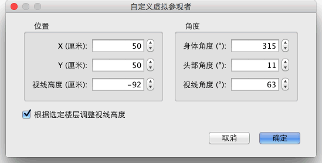

| 自定义 3D 视图 | |||
您可以选择 3D 视图→鸟瞰模式或 3D 视图→虚拟参观在两种 3D 游览模式间切换。
当您使用“鸟瞰模式”时，3D 视图中显示的是从高处俯瞰家居模型的三维场景。在该模式下按住鼠标左键，左右拖曳鼠标可使家居模型围绕其中心处的纵轴旋转；上下拖曳鼠标可使家居模型沿着与视图底部平行的水平轴旋转；滚动鼠标滚轮则可缩放 3D 视图的显示。 使用“虚拟参观模式”时，平面图中会显示出一个虚拟参观者，其位置和角度会在您操作 3D 视图时同步变化。虚拟参观者的身上共有四个标示符：
|


|
当鼠标指针位于这些标示符上时，其形状会发生变化，指示您可以拖曳鼠标更改虚拟参观者头部或身体的角度。当鼠标按钮处于按下状态时，鼠标指针的旁边会显示出标明角度值的工具提示。  可在此对话框中更改虚拟参观者的视野，并设置当前视点的总悬空高度是否应根据当前选定的楼层进行调整，使虚拟参观者向上或向下移动到选定的楼层。 选择 3D 视图 → 自定义 3D 视图... 菜单项可打开“自定义 3D 视图”对话框，可在此对话框中更改地面和天空的颜色或纹理、光源亮度以及墙体（和地面）的透明度。
|

|